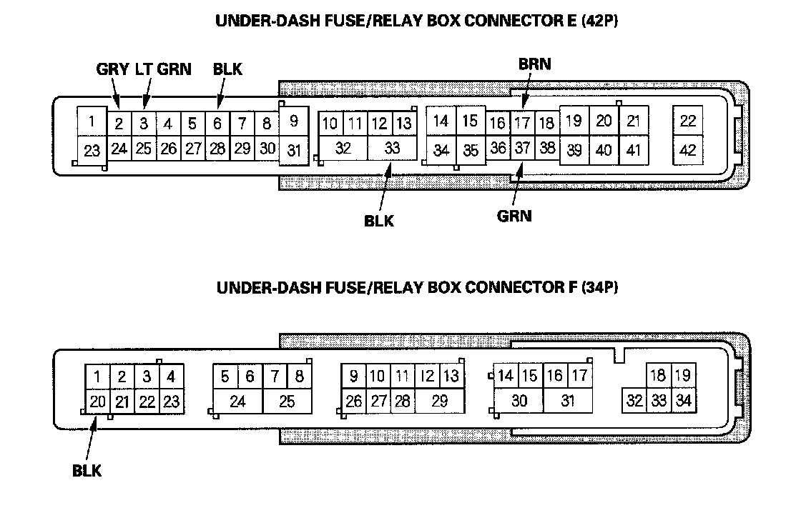
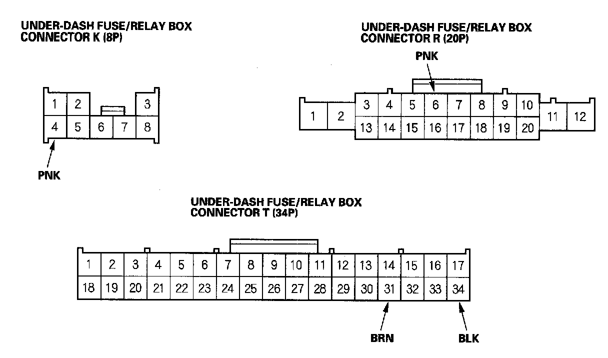
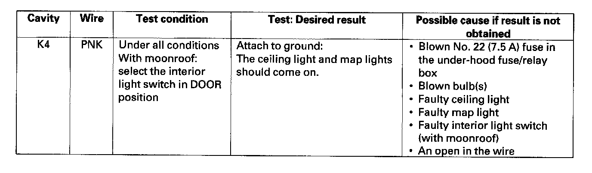
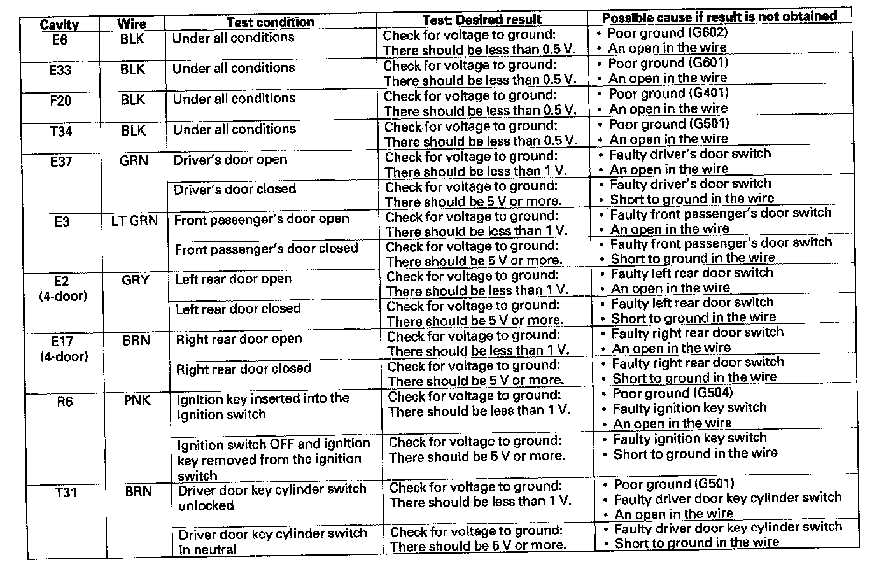

MICU Input Test
MICU Input Test1. Before troubleshooting the entry lights control system, troubleshoot the B-CAN System Diagnosis Test Mode A.
2. Check the No. 10 (7.5 A) fuse in the under-dash fuse/relay box. If any fuse is blown, replace it and go to step 3.


3. Disconnect the under-dash fuse/relay box connectors E, F, G, K, Q, and T.
NOTE: All connector views are shown from wire side of female terminals.
4. Inspect the connector and socket terminals to be sure they are all making good contact.
- If the terminals are bent, loose or corroded, repair them as necessary and recheck the system.
- If the terminals look OK, go to step 5.

5. With the connectors still disconnected, make these input tests at the appropriate connector.
- If any test indicates a problem, find and correct the cause, then recheck the system.
- If all the input tests prove OK, go to step 6.

6. Reconnect the connectors to the under-dash fuse/relay box, and make these input tests at the connectors.
- If any test indicates a problem, find and correct the cause, then recheck the system.
- If all the input tests prove OK, the MICU must be faulty; replace the under-dash fuse/relay box.